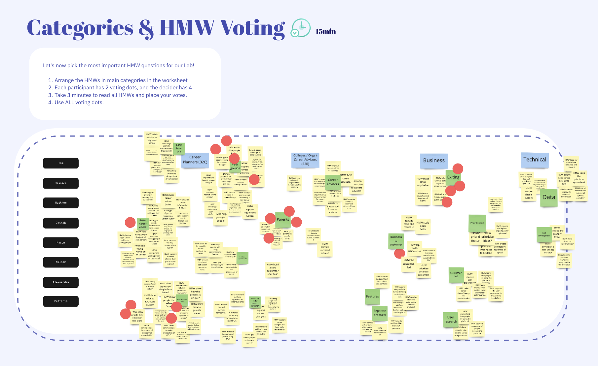
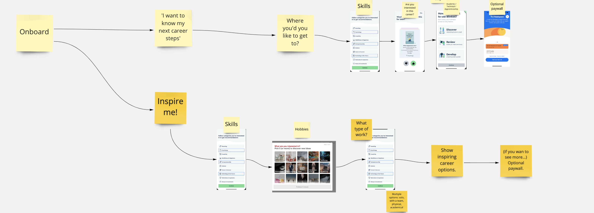
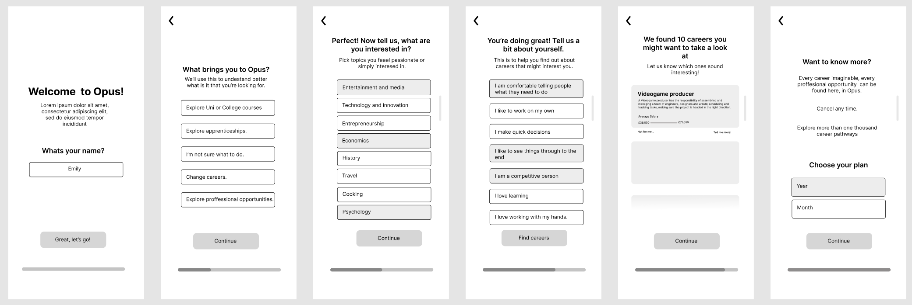
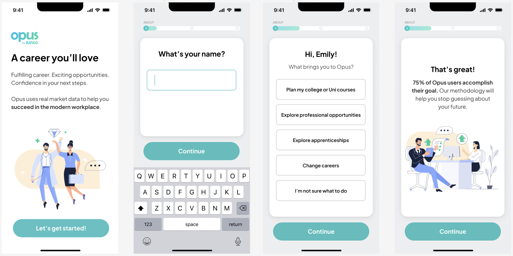
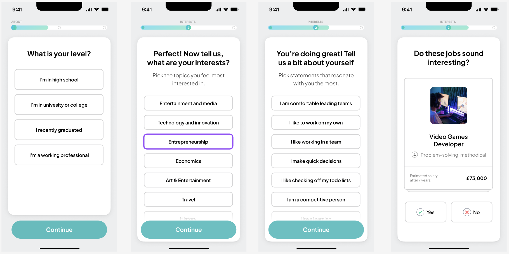
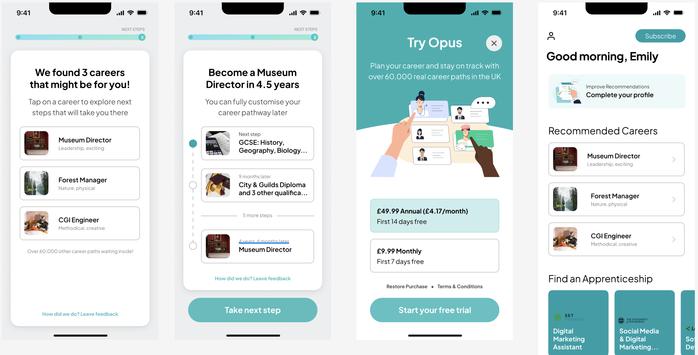

OPUS
UX/UI Design
Overview
OPUS is a career advice and guidance platform created by Iungo to help people create and plan personalised career routes, whether it be a high school student, a person re-entering the workforce or a professional looking for a career change.
Problem
Lungo had already developed an inital version of OPUS but felt that they were missing out on the full potential of the platform. They came to us with the idea of exploring the business to customer market. However, even though they had the foundations of a truly innovative technology, there was a need to improve the flow and overall user experience of Opus to attract individual users.
Objective for this project: Our goal was to help Iungo redesign their OPUS app to better target the individual end user in just four days.
Process
We split the process up into a 4-day product lab. First, we further explored Lungo's aspirations of OPUS to help define their goals. This was followed by brainstorming sessions to ideate solutions to the defined goals which were then realised through prototyping on the thrid day. Finally, the prototpyes were user tested for validation.
Day 1
We started the week off with a workshop that helped us to identify the problems, set the desired outcomes and generate solutions. All members of the Lungo and Lumi teams contributed during this stage in the process with many creative ideas that helped us figure out what their vision was and what tools could help them fulfil it
What they wanted to achieve long-term: One million people would plan their careers with Opus.
Two main issues: They were trying to target too many different client groups and didn’t know how to price the product.
Solution: We would design a mobile-first product with an iOS/Android subscription as opposed to the web app.
Day 2
On the second day, we dived into research and performed competitor analysis to gain a deeper insight into the market which allowed us to expand on the solutions we proposed the previous day. We chose several examples that served as inspiration and from there began to define what features the app would have.
One of the biggest issues we discovered was that the skill tests that many career advice platforms offer, to determine a persons career options, take too long to complete and generate unreliable results. Having gained this insight, I proposed to integrate a short but personalised career test into the onboarding process. This idea was welcomed by the clients and the design lead and implemented in the wireframes. With just a few questions to help us understand the users goals and skills, a user would be able to test what OPUS can do for them before considering a subscription.
Day 3
We dedicated the thrid day entirely to wireframing and prototyping the oboarding process as well as the dashboard.
We designed the onboarding process to be as simple and welcoming as possible by firstly limiting the questions presented to the user to only five, adding encouraging messages along the way and providing a progress tracker to reduce user frustration and the likelihood of abandonment. Having a portion of the career test at this stage allows us to start understanding the user from the moment they open the app and by the time they're finished, we would already have an idea of the kind of career paths that might interest them. After this brief demonstration of what Opus can offer, the user is offered a monthly or yearly subscription in order to access the app. Once they choose a plan they will be welcomed to the dashboard page where they can finish completing their profile and start exploring careers. Once the wireframe was approved by the clients, we completed the prototype
  Day 4
The last day was dedicated to conducting usability testing in order to validate our prototypes. There were eight interviewees of different ages, careers and backgrounds, all located in the UK.
The process was very valuable, it allowed us to assess design & UX issues, make changes based on real peoples' feedback as well as discover how many potential users would become real users.
The usability test revealed that 7 out of 8 users interviewed were ready to purchase the product based on what they’ve seen. Most agreed that the value of the product was reasonable, and most importantly the customisable journeys (career pathways) were considered a valuable tool and our testers were willing to become real users. These interviews were extremely valuable as they allowed us to asses design, identify usability issues, and therefore make useful changes based on real peoples feedback.
Conclusion
The workshop and the resulting prototype aligned Opus’s team next steps, their priorities and with a roadmap. On top of that, the prototype and idea was received with excitement by our interviewees, and was considered a useful and innovative tool. Seven out of eight would immediately purchase it and agreed that the value was reasonable.